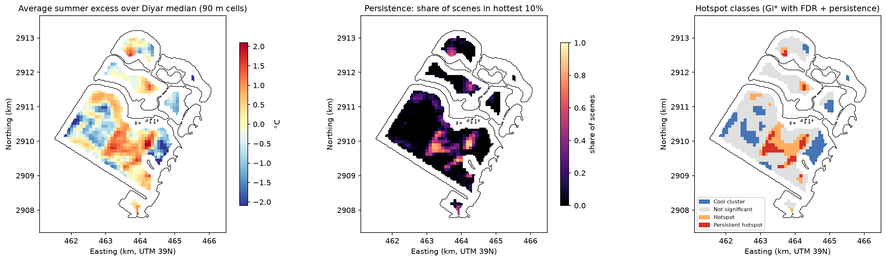
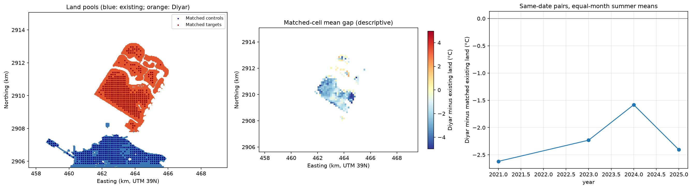
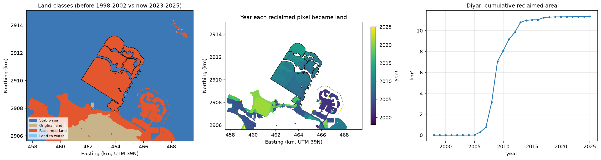
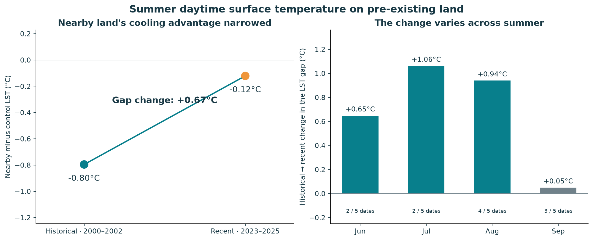
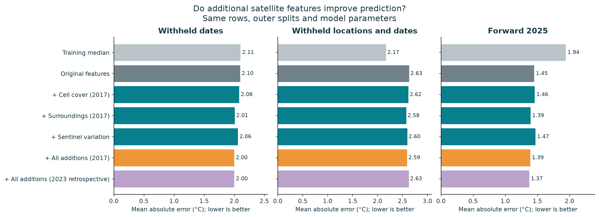
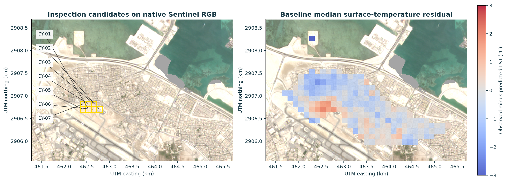
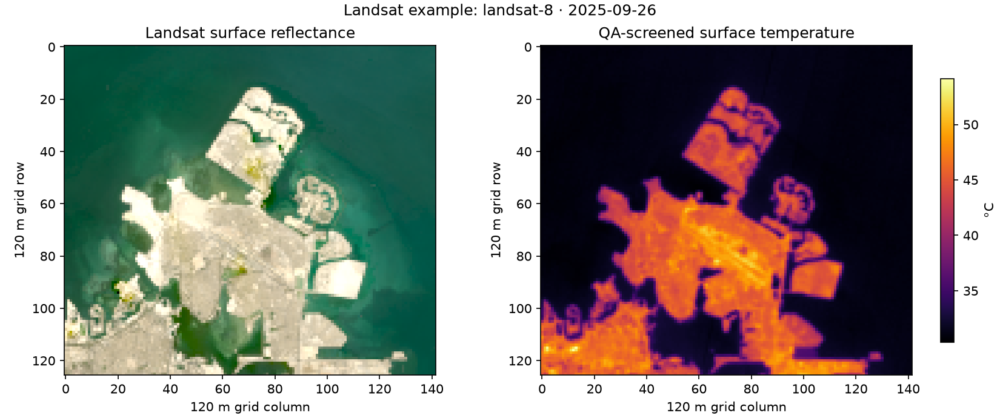

Diyar Al Muharraq · Bahrain
Overview
How does reclaimed land compare with similar existing land? Same-date summer observations and persistent hotspot maps.
Reclaimed area
--km²
--
Median summer surface temperature
--°C
Late-morning, June–September
Matched reclaimed and existing land
Comparable inland cells observed on the same summer dates
Matching accounts for measured surface differences. Results describe the matched subset; unmeasured differences can remain.
Evidence base
Open satellite and weather data
The sea cools the coastline
Temperature by distance from the shoreline, compared with Diyar's median
Sidra insights
Generated automatically from the latest results
Part 1 · Reclaimed land
Hotspots
Where inside Diyar is it repeatedly hotter than the rest of the development?
Persistent hotspot area
--ha
Hottest 10% on at least half the dates
Stable under all checks
--ha
Neighbourhood and period checks
Hotspot zones
--
--
Shoreline land, 0–30 m from water
--°C
--
Area by hotspot class
Hectares of 90 m cells inside Diyar
How robust are the hotspots?
Overlap of hotspots when the method changes
Jaccard overlap: 1 = identical hotspots, 0 = no overlap.
Hotspots and persistence

Matched land comparison

Reclamation history from satellite water index

Part 2 · Existing land nearby
Surroundings
Did older neighbourhoods next to the new land get warmer compared with similar land further away?
Nearby-minus-control gap change
--°C
--
Cells compared
--
--
Usable summer dates
--
--
Gap by summer month
Nearby land minus control land, before vs recent period
Uncertainty
Whole-year and spatial-block resampling
Nearby existing-land temperature comparison

Under the hood
Model
A gradient-boosting model predicts recent surface temperature on control land, tested on dates and places it never saw.
Best spatial-test error (MAE)
--°C
--
Held-out dates error (MAE)
--°C
--
Input features
--
Landsat, Sentinel-2 and ERA5 weather
Prediction error by validation test
Mean absolute error in °C, lower is better
How we validate
Nearby pixels and dates are related, so we hold out whole groups
- SpaceWhole spatial blocks are withheld, so the model is tested on areas it never saw.
- DateWhole summer dates are withheld, so it is tested on new weather and seasons.
- Space and dateBoth at once: the hardest test.
- Forward yearAll of 2025 is held out to test prediction into the future.
The model is used to screen for cells that are warmer than expected. It does not measure how much cooling an intervention would achieve.
Additional satellite features on the same held-out observations

From data to action
Field visit
Cells that were repeatedly warmer than the model predicted, shortlisted for an on-the-ground inspection.
Priority cells
--
--
Model and control choices tested
--
Selection checked across all of them
Cells reviewed
--
Nearby cells with enough clear data
Inspection candidates

What to check on site
- Surface materials: dark paving, roofs, bare sand.
- Shade and vegetation: trees, irrigation, shaded walkways.
- Air flow: building layout blocking sea breezes.
- Local activity: car parks, industry, heat sources.
Satellites measure late-morning ground temperature, not air temperature or how hot people feel. Ground measurements are needed before choosing interventions.
Study area
Map view
Where we measured, and what the satellites see.
Study settings
From the notebooks' saved settings
Example input: Landsat 8, 26 September 2025
Natural colour and surface temperature after quality screening
